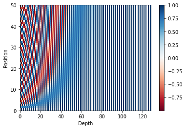
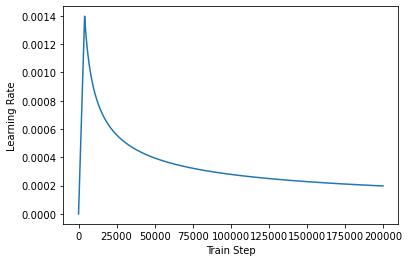

https://github.com/huggingface/transformersAttention is all you need
ref: 딥 러닝을 이용한 자연어 처리 입문, Attention is all you need
\(\star\) seq2seq 구조인 인코더-디코더를 따르면서 어텐션만으로 구현한 모델, RNN을 사용하지 않고 인코더-디코더 구조로 설계하였지만 RNN보다 우수한 성능을 보임
https://github.com/huggingface/transformers/blob/main/README_ko.mdseq2seq 의 한계
인코더, 디코더로 구성되어 있는 seq2seq
인코더는 입력 시퀀스를 하나의 벡터 표현으로 압축
- \(\to\) 입력 시퀀스의 정보가 일부 손실된다는 단점 존재
- \(\to\) 이를 위해 어텐션 메카니즘 등장
디코더는 이 벡터 표현을 통해 출력 시퀀스를 만듦
\(\star\) 어텐션을 RNN의 보정을 위한 용도로 사용하는 것이 아니라 어텐션만으로 인코더와 디코더를 만든다면??
트랜스포머의 주요 하이퍼파라미터
각 값은 논문의 설정으로서, 바뀔 수 있음
\(d_{model} = 512\)
- 인코더와 디코더에서의 정해진 입력 및 출력의 크기
- 임베딩 벡터의 차원도 이와 같음
- 각 인코더와 디코더가 다음 층의 인코더와 디코더로 값을 보낼 때도 유지
\(num_layers = 6\)
- 하나의 인코더와 디코더를 층으로 생각하였을때, 모델에서 인코더와 디코더가 몇 층으로 구성되어 있는지를 의미
\(num_heads = 8\)
- 어텐션을 병렬로 수행하고 결과값을 다시 합치는 방식을 수행하기 위함, 즉 병렬의 개수
\(d_{ff} = 2048\)
- 트랜스포머 내부에 피드 포워드 신경망이 존재, 그 신경망의 은닉층의 크기를 의미
- 단, 피드 포워드 신경망의 입력층과 출력층의 크기는 \(d_{model}\)
Transformer
flowchart LR
subgraph _
direction LR
subgraph Transformer
direction LR
Encoders -->Decoders
end
end
Text1("'I am a student`") --> _ --> Text2("'je suis étudiant`")
- 인코더-디코더 구조를 가진 트랜스포머
- 인코더와 디코더라는 단위가 N개로 구성되는 구조 \(\to\) Encoders, Decoders로 표현
- seq2seq에서는 인코더와 디코더에서 각각 하나의 RNN이 t개의 시점time step을 가지는 구조
flowchart LR
_-->__
__-->out
subgraph _
direction BT
Embedding1-->Encoders
subgraph Encoders
Encoder
end
subgraph Embedding1
Text1("'I|am|a|student'")
end
end
subgraph __
direction BT
Embedding2-->Decoders
subgraph Decoders
Decoder
end
subgraph Embedding2
Text2("'<\br>sos|je|suis|étudiant'")
end
end
out("'je|suis|étudiant|eos'")
- symbol인 sos를 입력받아 eos symbol 나올때까지 연산을 진행하는, RNN을 사용하지 않지만 인코더 디코더 구조 유지되는 모습을 보임
Positional Encoding
Note
RNN이 자연어 처리에서 유용했던 이유
- 단어의 위치에 따라 단어를 순차적으로 입력받아서 처리하는 RNN의 특성으로 인해 각 단어의 위치 정보 position information을 가질 수 있어서
포지셔널 인코딩
- 트랜스포머는 단어의 위치 정보를 얻기 위해서 각 단어의 임베딩 벡터에 위치 정보들을 더하여 모델의 입력으로 사용
flowchart LR
_-->__
__-->out
subgraph _
direction BT
Embedding_en-->Positional\nEncoding_en
Positional\nEncoding_en-->Encoders
subgraph Encoders
Encoder
end
subgraph Embedding_en
Text1("'I|am|a|student'")
end
end
subgraph __
direction BT
Embedding_de-->Positional\nEncoding_de
Positional\nEncoding_de-->Decoders
subgraph Decoders
Decoder
end
subgraph Embedding_de
Text2("'<\br>sos|je|suis|étudiant'")
end
end
out("'je|suis|étudiant|eos'")
- 입력으로 사용되는 임베딩 벡터들이 트랜스포머의 입력으로 사용되기 전에 포지셔널 인코딩 값이 더해지는 과정
\[PE_{(pos, 2i)} = \sin(pos/10000^{2i/d_{model}})\]
\[PE_{(pos, 2i+1)} = \cos(pos/10000^{2i/d_{model}})\]
- 트랜스포머가 위치 정보를 가진 값을 만들기 위해 사용하는 두 개의 함수
import numpy as np
import pandas as pdd_model = pd.DataFrame(np.empty((4, 4), dtype=str), index=['I', 'am', 'a', 'student'])
values = ['pos1,i1', 'pos1,i2', 'pos1,i3', 'pos1,i4',
'pos2,i1', 'pos2,i2', 'pos2,i3', 'pos2,i4',
'pos3,i1', 'pos3,i2', 'pos3,i3', 'pos3,i4',
'pos4,i1', 'pos4,i2', 'pos4,i3', 'pos4,i4']
for i in range(4):
for j in range(4):
d_model.iloc[i, j] = values[i * 4 + j]d_model| 0 | 1 | 2 | 3 | |
|---|---|---|---|---|
| I | pos1,i1 | pos1,i2 | pos1,i3 | pos1,i4 |
| am | pos2,i1 | pos2,i2 | pos2,i3 | pos2,i4 |
| a | pos3,i1 | pos3,i2 | pos3,i3 | pos3,i4 |
| student | pos4,i1 | pos4,i2 | pos4,i3 | pos4,i4 |
- pos는 입력 문장에서 임베딩 벡터의 위치
- i는 임베딩 벡터 내의 차원의 인덱스를 의미
- 위 식에 따르면
- 짝수면 sin함수 사용 \(\to\) (pos,2i)
- 홀수면 cos함수 사용 \(\to\) (pos,2i+1)
- 여기서 \(d_{model}\)은 트랜스포머의 모든 층의 출력 차원을 의미하는 하이퍼파라미터
- 임베딩 벡터도 같은 차원임
- 이와 깉은 포지셔널 인코딩 방법을 사용하면 순서 정보가 보존됨.
- 각 임베딩 멕터에 포지셔널 인코딩의 값을 더하면(차원 같음!) 같은 단어라도 문장 내의 위치에 따라 트랜스포머의 입력으로 들어가는 임베딩 벡터의 값이 달라짐
import matplotlib.pyplot as plt
import tensorflow as tfclass PositionalEncoding(tf.keras.layers.Layer):
def __init__(self, position, d_model):
super(PositionalEncoding, self).__init__()
self.pos_encoding = self.positional_encoding(position, d_model)
def get_angles(self, position, i, d_model):
angles = 1 / tf.pow(10000, (2 * (i // 2)) / tf.cast(d_model, tf.float32))
return position * angles
def positional_encoding(self, position, d_model):
angle_rads = self.get_angles(
position=tf.range(position, dtype=tf.float32)[:, tf.newaxis],
i=tf.range(d_model, dtype=tf.float32)[tf.newaxis, :],
d_model=d_model)
# 배열의 짝수 인덱스(2i)에는 사인 함수 적용
sines = tf.math.sin(angle_rads[:, 0::2])
# 배열의 홀수 인덱스(2i+1)에는 코사인 함수 적용
cosines = tf.math.cos(angle_rads[:, 1::2])
angle_rads = np.zeros(angle_rads.shape)
angle_rads[:, 0::2] = sines
angle_rads[:, 1::2] = cosines
pos_encoding = tf.constant(angle_rads)
pos_encoding = pos_encoding[tf.newaxis, ...]
print(pos_encoding.shape)
return tf.cast(pos_encoding, tf.float32)
def call(self, inputs):
return inputs + self.pos_encoding[:, :tf.shape(inputs)[1], :]포지셔널 인코딩 행렬 시각화
# 문장의 길이 50, 임베딩 벡터의 차원 128
sample_pos_encoding = PositionalEncoding(50, 128)
plt.pcolormesh(sample_pos_encoding.pos_encoding.numpy()[0], cmap='RdBu')
plt.xlabel('Depth')
plt.xlim((0, 128))
plt.ylabel('Position')
plt.colorbar()
plt.show()(1, 50, 128)
Attention
Encoder Self-Attention
- 인코더에서 이루어짐
- Query = Key = Value(값이 같다는 말이 아님)
flowchart LR
Encoder1 --> Encoder2
Encoder2 --> Encoder1
Encoder2 --> Encoder3
Encoder3 --> Encoder2
Encoder1 --> Encoder3
Encoder3 --> Encoder1
Masked Decoder Self-Attention
- 디코더에서 이루어짐
- Query = Key = Value(값이 같다는 말이 아님)
flowchart RL
Decoder1
Decoder2 --> Decoder1
Decoder3 --> Decoder1
Decoder3 --> Decoder2
Encoder-Decoder Attention
- 디코더에서 이루어짐
- Query = 디코더 벡터, Key = Value = 인코더 벡터
flowchart RL
Encoder1
Encoder2
Encoder3
Decoder --> Encoder1
Decoder --> Encoder2
Decoder --> Encoder3
Important
셀프 어텐션은 Query, Key, Value가 동일한 경우를 말함
Encoder-Decoder Attention의 경우 Query가 디코더의 벡터인 반면에 Key와 Value가 인코더의 벡터이므로 셀프 어텐션이라고 부르지 않음
여기서 Query, Key 등이 같다는 것은 벡터의 값이 같다는 것이 아닌 벡터의 출처가 같다는 의미
flowchart BT
subgraph Encoders
direction BT
direction BT
Multi-head\nSelf-Attention -->Position-wise\nFFNN_en
end
subgraph Decoders
direction BT
direction BT
Masked\nMulti-head\nSelf-Attention -->Multi-head\nAttention --> Position-wise\nFFNN_de
end
Position-wise\nFFNN_en --> Multi-head\nAttention
embedding_en-->Positional\nencoding_en-->Multi-head\nSelf-Attention
embedding_de-->Positional\nencoding_de-->Masked\nMulti-head\nSelf-Attention
위(각각 하나의 층으로 봄)의 인코더, 디코더가 num_layer지정한 수만큼 있음
Encoder
- 하나의 인코더 층은 크게 두 개의 서브층sublayer로 나뉨
- 셀프 어텐션 Self Attention
- 피드 포워드 신경망 Feed Forward Neural Network
Tip
Multi-head Self Attention
- 셀프 어텐션을 병렬적으로 사용하였다는 의미
Position-wise FFNN
- 순방향신경망
Self Attention of Encoder
Note
Remind
- 어텐션 함수는 주어진 Query에 대해 모든 Key와의 유사도를 구함
- 유사도를 가중치로 하여 Key와 맴핑되어 있는 각각의 Value에 반영해 좀
- 이 유사도가 반영된 Value를 모두 가중합하여 Return
- seq2seq에서의 Q,K,V의 정의
- Q = Query, t 시점의 디코더 셀에서의 은닉상태
- K = Key, 모든 시점의 인코더 셀의 은닉상태들
- V = Value, 모든 시점의 인코더 셀의 은닉상태들
\(\to\) t 시점의~의 의미는 변하면서 반복적으로 쿼리 수행하니까 결국은 전체 시점에 대해서 일반화 가능
- seq2seq에서의 Q,K,V의 정의
- Q = Query, 모든 시점의 디코더 셀에서의 은닉상태들
- K = Key, 모든 시점의 인코더 셀의 은닉상태들
- V = Value, 모든 시점의 인코더 셀의 은닉상태들
1. Self Attention
- 셀프 어텐션
- Q = 입력 문장의 모든 단어 벡터들
- K = 입력 문장의 모든 단어 벡터들
- V = 입력 문장의 모든 단어 벡터들
- 연속된 문장들에 대하여 지칭하는 단어가 다르지만 의미는 같을 수 있는데, 셀프 어텐션은 이 유사도를 구하여서 연관 가능성을 찾아낸다.
2. Q, K, V
- 셀프 어텐션은 일단 문장의 각 단어 벡터로부터 Q벡터, K벡터, V벡터를 얻음.
- Q벡터, K벡터, V벡터는 \(d_{model}\) 차원을 가지는 단어 벡터들보다 더 작은 차원을 가짐
- 논문을 예로 들면 \(d_{model}\)의 차원은 512, Q벡터, K벡터, V벡터의 차원은 각각 64
- 이 64는 또 다른 하이퍼파라미터인 num_heads로 결정되는데, 트랜스포머는 \(d_{model}\)을 num_heads로 나눈 값을 Q벡터, K벡터, V벡터의 차원으로 결정.
- 논문의 num_heads = 8이었으니까 \(512/8 = 64\)로 결정된 것
- 이 Q벡터, K벡터, V벡터는 단어마다, 벡터마다 서로 다른 가중치 행렬을 곱하여 얻음
- 각 단어마다 Q벡터, K벡터, V벡터 각각의 가중치, Q벡터, K벡터, V벡터 각각이 존재하는 것
3. Scaled dot-product Attention
각 단어 별로 Q벡터, K벡터, V벡터를 구한 후 각 Q벡터는 모든 K벡터에 대해서 어텐션 스코어를 구하고, 어텐션 분포를 구한 뒤 이를 사용하여 모든 V벡터를 가중합하여 어텐션 값 또는 컨텍스트 벡터를 구함-> 모든 Q벡터에 대해 반복
- 내적한 후 특정값을 나눔으로써 값을 조정하는 과정 추가한 스케일드 갓-프로덕트 어텐션
\[score(q,k) = \frac{q k}{\sqrt{n}}\]
\(\sqrt{n}\)이 결정되는 과정
- 논문을 예로 들면 \(d_{model}\)의 차원이 512, num_heads가 8, Q,K,V의 차원 \(d_k\)가 64(512/8) 이었음, 여기서 64에 root 취한 8으로 결정되는 것
4. 행렬 연산으로 일괄 처리
Q 벡터마다 3을 연산하는 것을 피하기 위함
- 문장 행렬에 가중치 행렬을 곱하여 Q행렬, K행렬, V행렬을 구한다(단지 벡터를 행렬화한 것 뿐).
- 각 단어의 Q벡터와 전치한 K벡터의 내적이 각 행렬의 원소가 되는 행렬을 결과로 추출.
- 2번의 결과에 \(\sqrt{d_k}\)를 나누어 softmax취한 후 V행렬을 곱하여 각 행과 열이 어텐션 스코어 값을 가지는 행렬을 구함.
\[Attention(Q,K,V) = softmax(\frac{QK^\top}{\sqrt{d_k}})V\]
입력 문장의 길이가 seq_len이라면, 문장 행렬의 크기는 (seq_len,\(d_{model}\))
차원 정리
- \(Q\) = (seq_len, \(d_k)\)
- \(W^Q = (d_{model},d_k)\)
- \(K^\top\) = (\(d_k\), seq_len)
- \(W^K = (d_{model},d_k)\)
- \(V\) = (seq_len, \(d_v)\)
- \(W^V = (d_{model},d_v)\)
- 논문에서는 \(d_k,d_v\)의 차원이 \(d_{model}\)/num_heads로 같게 설정함
- attention score matrix = (seq_len, \(d_v\))
5. Scaled dot-product attention 구현
def scaled_dot_product_attention(query, key, value, mask):
# query 크기 : (batch_size, num_heads, query의 문장 길이, d_model/num_heads)
# key 크기 : (batch_size, num_heads, key의 문장 길이, d_model/num_heads)
# value 크기 : (batch_size, num_heads, value의 문장 길이, d_model/num_heads)
# padding_mask : (batch_size, 1, 1, key의 문장 길이)
# Q와 K의 곱. 어텐션 스코어 행렬.
matmul_qk = tf.matmul(query, key, transpose_b=True)
# 스케일링
# dk의 루트값으로 나눠준다.
depth = tf.cast(tf.shape(key)[-1], tf.float32)
logits = matmul_qk / tf.math.sqrt(depth)
# 마스킹. 어텐션 스코어 행렬의 마스킹 할 위치에 매우 작은 음수값을 넣는다.
# 매우 작은 값이므로 소프트맥스 함수를 지나면 행렬의 해당 위치의 값은 0이 된다.
if mask is not None:
logits += (mask * -1e9)
# 소프트맥스 함수는 마지막 차원인 key의 문장 길이 방향으로 수행된다.
# attention weight : (batch_size, num_heads, query의 문장 길이, key의 문장 길이)
attention_weights = tf.nn.softmax(logits, axis=-1)
# output : (batch_size, num_heads, query의 문장 길이, d_model/num_heads)
output = tf.matmul(attention_weights, value)
return output, attention_weightsscaled_dot_product_attention 실행
# 임의의 Query, Key, Value인 Q, K, V 행렬 생성
np.set_printoptions(suppress=True)
temp_k = tf.constant([[10,0,0],
[0,10,0],
[0,0,10],
[0,0,10]], dtype=tf.float32) # (4, 3)
temp_v = tf.constant([[ 1,0],
[ 10,0],
[ 100,5],
[1000,6]], dtype=tf.float32) # (4, 2)
temp_q = tf.constant([[0, 10, 0]], dtype=tf.float32) # (1, 3)query에 해당하는 [0,10,0]은 key에 해당하는 두 번째 값과 일치해야 함.
# 함수 실행
temp_out, temp_attn = scaled_dot_product_attention(temp_q, temp_k, temp_v, None)
print(temp_attn) # 어텐션 분포(어텐션 가중치의 나열)
print(temp_out) # 어텐션 값tf.Tensor([[0. 1. 0. 0.]], shape=(1, 4), dtype=float32)
tf.Tensor([[10. 0.]], shape=(1, 2), dtype=float32)두 번째 값과 일치했어서 두 번째가 1인 값을 반환, 결과적으로 [10,0]의 어텐션 값 반환
temp_q = tf.constant([[0, 0, 10]], dtype=tf.float32)
temp_out, temp_attn = scaled_dot_product_attention(temp_q, temp_k, temp_v, None)
print(temp_attn) # 어텐션 분포(어텐션 가중치의 나열)
print(temp_out) # 어텐션 값tf.Tensor([[0. 0. 0.5 0.5]], shape=(1, 4), dtype=float32)
tf.Tensor([[550. 5.5]], shape=(1, 2), dtype=float32)세 번째 값과 네 번째 값이 같이 일치하다면? 합이 1이되게 나눠서 0.5,0.5씩 나눠짐
- [100,5] * 0.5 + [1000,6] * 0.5 = [550,5.5]
[100*0.5 + 1000*0.5,5*0.5 + 6*0.5][550.0, 5.5]temp_q = tf.constant([[0, 0, 10], [0, 10, 0], [10, 10, 0]], dtype=tf.float32) # (3, 3)
temp_out, temp_attn = scaled_dot_product_attention(temp_q, temp_k, temp_v, None)
print(temp_attn) # 어텐션 분포(어텐션 가중치의 나열)
print(temp_out) # 어텐션 값tf.Tensor(
[[0. 0. 0.5 0.5]
[0. 1. 0. 0. ]
[0.5 0.5 0. 0. ]], shape=(3, 4), dtype=float32)
tf.Tensor(
[[550. 5.5]
[ 10. 0. ]
[ 5.5 0. ]], shape=(3, 2), dtype=float32)6. Multi-head Attention
왜 스케일링하여 어텐션 스코어를 구했을까?
- 논문에서는 한 번의 어텐션보다 여러번의 어텐션을 병렬로 사용하는 것이 더 효과적이라고 판단
- 그래서 \(d_{model}\)의 차원을 num_heads로 나누어 \(d_{model}\)/num_heads의 차원을 가지는 Q,K,V에 대해서 num_heads 개의 병렬 어텐션 수행
- num_heads만큼 병렬이 이뤄지는데, 이 때 나오는 각각의 어텐션 값 행렬을 어텐션 헤드라고 함.
- 이 때 가중치 행렬의 값\(W^Q,W^K,W^V\)은 num_heads의 어텐션 해드마다 전부 다름
병렬로 수행한 효과?
- 어텐션을 병렬로 수행하여 다른 시각으로 정보를 수집할 수 있음
7. Multi-head Attention 구현
가중치 행렬
- Q, K, V 행렬을 만들기 위한 가중치 행렬 \(W^Q,W^K,W^V\)
- 어텐션 헤드들을 연결concatenation 후에 곱해주는 행렬 \(W^O\)
가중치 행렬을 곱하는 것은 Dense layer 지나게 하여 구현
- \(W^Q,W^K,W^V\)에 해당하는 \(d_{model}\)의 크기의 밀집층(Dense layer)을 지나게 한다.
- 지정된 헤드수 num_heads 만큼 나눈다(split).
- scaled dot-product attention
- 나눠졌던 헤드들을 연결concatenatetion한다.
- \(W^O\)에 해당하는 밀집층을 지나게 한다.
class MultiHeadAttention(tf.keras.layers.Layer):
def __init__(self, d_model, num_heads, name="multi_head_attention"):
super(MultiHeadAttention, self).__init__(name=name)
self.num_heads = num_heads
self.d_model = d_model
assert d_model % self.num_heads == 0
# d_model을 num_heads로 나눈 값.
# 논문 기준 : 64
self.depth = d_model // self.num_heads
# WQ, WK, WV에 해당하는 밀집층 정의
self.query_dense = tf.keras.layers.Dense(units=d_model)
self.key_dense = tf.keras.layers.Dense(units=d_model)
self.value_dense = tf.keras.layers.Dense(units=d_model)
# WO에 해당하는 밀집층 정의
self.dense = tf.keras.layers.Dense(units=d_model)
# num_heads 개수만큼 q, k, v를 split하는 함수
def split_heads(self, inputs, batch_size):
inputs = tf.reshape(
inputs, shape=(batch_size, -1, self.num_heads, self.depth))
return tf.transpose(inputs, perm=[0, 2, 1, 3])
def call(self, inputs):
query, key, value, mask = inputs['query'], inputs['key'], inputs[
'value'], inputs['mask']
batch_size = tf.shape(query)[0]
# 1. WQ, WK, WV에 해당하는 밀집층 지나기
# q : (batch_size, query의 문장 길이, d_model)
# k : (batch_size, key의 문장 길이, d_model)
# v : (batch_size, value의 문장 길이, d_model)
# 참고) 인코더(k, v)-디코더(q) 어텐션에서는 query 길이와 key, value의 길이는 다를 수 있다.
query = self.query_dense(query)
key = self.key_dense(key)
value = self.value_dense(value)
# 2. 헤드 나누기
# q : (batch_size, num_heads, query의 문장 길이, d_model/num_heads)
# k : (batch_size, num_heads, key의 문장 길이, d_model/num_heads)
# v : (batch_size, num_heads, value의 문장 길이, d_model/num_heads)
query = self.split_heads(query, batch_size)
key = self.split_heads(key, batch_size)
value = self.split_heads(value, batch_size)
# 3. 스케일드 닷 프로덕트 어텐션. 앞서 구현한 함수 사용.
# (batch_size, num_heads, query의 문장 길이, d_model/num_heads)
scaled_attention, _ = scaled_dot_product_attention(query, key, value, mask)
# (batch_size, query의 문장 길이, num_heads, d_model/num_heads)
scaled_attention = tf.transpose(scaled_attention, perm=[0, 2, 1, 3])
# 4. 헤드 연결(concatenate)하기
# (batch_size, query의 문장 길이, d_model)
concat_attention = tf.reshape(scaled_attention,
(batch_size, -1, self.d_model))
# 5. WO에 해당하는 밀집층 지나기
# (batch_size, query의 문장 길이, d_model)
outputs = self.dense(concat_attention)
return outputs8. Padding Mask
어텐션에서 제외하기 위해 값을 가리는 역할
- 방법: 어텐션 스코어 행렬의 마스킹 위치에 매우 작은 음수값을 넣어주기
- 소프트맥스 함수를 지나면 값이 0이 되어 유사도 구할때 반영되지 않름.
def create_padding_mask(x):
mask = tf.cast(tf.math.equal(x, 0), tf.float32)
# (batch_size, 1, 1, key의 문장 길이)
return mask[:, tf.newaxis, tf.newaxis, :]print(create_padding_mask(tf.constant([[1, 21, 777, 0, 0]])))tf.Tensor([[[[0. 0. 0. 1. 1.]]]], shape=(1, 1, 1, 5), dtype=float32)Position-wise Feed Forward Neural Network
인코더와 디코더에서 공통적으로 가지고 있는 서브층
= FFNN(Fully Connected FFNN)
\[FFNN(x) = MAX(0,xW-1 + b_1)W_2 + b_2\]
\(x\) -> \(F_1 = xW_1 + b_1\) -> 활성화 함수:ReLU \(F_2 = max(0,F_1)\) -> \(F_3 = F_2W_2 + b_2\)
- 여기서 \(x\)는 멀티 헤드 어텐션의 결과로 나온 (seq_len, \(d_{model}\))의 차원을 가지는 행렬
- 가중치 행렬 \(W_1\) = (\(d_{model}, d_{ff}\))
- 가중치 행렬 \(W_2\) = (\(d_{ff},d_{model}\))
- 논문은 \(d_{ff}\)를 2048로 정의
- 매개변수 \(W_1,W_2,b_1,b_2\)는 각 인코더 층마다 동일하게 계산되지만 값은 층마다 다 다르다.
# 다음의 코드는 인코더와 디코더 내부에서 사용할 예정입니다.
outputs = tf.keras.layers.Dense(units=dff, activation='relu')(attention)
outputs = tf.keras.layers.Dense(units=d_model)(outputs)Residual connection and Layer Normalization
1. 잔차 연결
\[H(x) = x + F(x)\]
- \(F(x)\)는 트랜스포머에서 서브층에 해당
- 즉, 장차 연결은 서브층의 입력과 출력을 더하는 것
- 서브층의 입력과 출력은 동일한 차원을 갖고 있어서 가능
- 그래서 재귀하는 것처럼 다이어그램 그려보면 화살표가 출력층에서 나와 입력층으로 들어가는 모습
- 잔차 연결은 컴퓨터 비전 분야에서 주로 사용되는 모델의 학습을 돕는 기법
식으로 표현 -> \(x + Sublayer(x)\)
서브층이 멀티 헤드 어텐션이었다면 $H(x) - x + Multi - head Attention(x)
참고 : 잔차연결 관련 논문
2. 층 정규화
잔차연결과 층 정규화 모두 수행한 함수
\[LN = LayerNorm(x+Sublayer(x))\]
텐서의 마지막 차원에 대하여 평균과 분산을 구하고, 이를 가지고 어떤 수식을 통해 값을 정규화하여 학습을 도움
- 텐서의 마지막 차원 = 트랜스포머에서는 \(d_{model}\) 차원을 의미
평균과 분산을 통한 벡터 \(x_i\) 정규화
- 스칼라인 평균과 분산 도출
- \(\epsilon\)은 분모가 0이 되는 것을 방지
\[\hat{x}_{i,k} = \frac{x_{i,k} - \mu_i}{\sqrt{\sigma^2_i + \epsilon}}\]
- 감마와 베타 도입
- LayerNormalization(케라스에 내장되어 있음)
\[ln_i = \gamma \hat{x}_i + \beta = LayerNorm(x_i)\]
참고: 층 정규화 관련 논문
Encoder 구현
인코더 입력으로 들어가는 문장에는 패딩이 있을 수 있으므로 어텐션 시 패딩 토큰을 제외하도록 패딩 마스크를 사용
- multiheadattention 함수의 mask 인자값으로 padding_mask가 사용되는 이유
- 인코더는 두 개의 서브층으로 이루어짐
- 멀티 헤드 어텐션
- 피드 포워드 신경망
- 서브층 이후 드롭 아웃, 잔차 연결, 층 정규화 수행
def encoder_layer(dff, d_model, num_heads, dropout, name="encoder_layer"):
inputs = tf.keras.Input(shape=(None, d_model), name="inputs")
# 인코더는 패딩 마스크 사용
padding_mask = tf.keras.Input(shape=(1, 1, None), name="padding_mask")
# 멀티-헤드 어텐션 (첫번째 서브층 / 셀프 어텐션)
attention = MultiHeadAttention(
d_model, num_heads, name="attention")({
'query': inputs, 'key': inputs, 'value': inputs, # Q = K = V
'mask': padding_mask # 패딩 마스크 사용
})
# 드롭아웃 + 잔차 연결과 층 정규화
attention = tf.keras.layers.Dropout(rate=dropout)(attention)
attention = tf.keras.layers.LayerNormalization(
epsilon=1e-6)(inputs + attention)
# 포지션 와이즈 피드 포워드 신경망 (두번째 서브층)
outputs = tf.keras.layers.Dense(units=dff, activation='relu')(attention)
outputs = tf.keras.layers.Dense(units=d_model)(outputs)
# 드롭아웃 + 잔차 연결과 층 정규화
outputs = tf.keras.layers.Dropout(rate=dropout)(outputs)
outputs = tf.keras.layers.LayerNormalization(
epsilon=1e-6)(attention + outputs)
return tf.keras.Model(
inputs=[inputs, padding_mask], outputs=outputs, name=name)Encoder 쌓기
def encoder(vocab_size, num_layers, dff,
d_model, num_heads, dropout,
name="encoder"):
inputs = tf.keras.Input(shape=(None,), name="inputs")
# 인코더는 패딩 마스크 사용
padding_mask = tf.keras.Input(shape=(1, 1, None), name="padding_mask")
# 포지셔널 인코딩 + 드롭아웃
embeddings = tf.keras.layers.Embedding(vocab_size, d_model)(inputs)
embeddings *= tf.math.sqrt(tf.cast(d_model, tf.float32))
embeddings = PositionalEncoding(vocab_size, d_model)(embeddings)
outputs = tf.keras.layers.Dropout(rate=dropout)(embeddings)
# 인코더를 num_layers개 쌓기
for i in range(num_layers):
outputs = encoder_layer(dff=dff, d_model=d_model, num_heads=num_heads,
dropout=dropout, name="encoder_layer_{}".format(i),
)([outputs, padding_mask])
return tf.keras.Model(
inputs=[inputs, padding_mask], outputs=outputs, name=name)인코더 층을 num_layers 만큼 쌓는 클래스
Encoder에서 Decoder로
인코더에서 num_layers만큼 총 연산을 순차적으로 한 후 마지막 층의 인코더의 출력을 디코더로 전달
Decoder: Self-Attention and Look-ahead Mask
트랜스포머는 문장 행렬로 입력을 한 번에 받기 때문에 현재 시점의 단어를 예측하고자 할 때 입력 문장 행렬로부터 미래 시점의 단어까지 참고하느 현상이 발생
이를 위해 디코더에서 현재 시점의 예측에서 현재 시점보다 미래에 있는 단어들을 참고하지 못하도록 룩-어헤드 마스크 도입
디코더의 첫번때 서브층에서 이루어짐
디코더의 셀프 어텐션은 인코더의 멀티 헤드 셀프 어텐션과 동일한 연산을 수행하나, 어텐션 스코어 행렬에서 마스킹을 적용하는 점이 다름
-> 미리보기 방지를 위함
트랜스포머 마스킹의 종류
- 인코더의 셀프 어텐션 = 패딩 마스크를 전달
- 디코더의 첫번째 서브층인 마스크드 셀프 어텐션 = 룩-어헤드 마스크를 전달
- 디코더의 두번째 서브층인 인코더-디코더 어텐션 = 패딩 마스크를 전달
# 디코더의 첫번째 서브층(sublayer)에서 미래 토큰을 Mask하는 함수
def create_look_ahead_mask(x):
seq_len = tf.shape(x)[1]
look_ahead_mask = 1 - tf.linalg.band_part(tf.ones((seq_len, seq_len)), -1, 0)
padding_mask = create_padding_mask(x) # 패딩 마스크도 포함
return tf.maximum(look_ahead_mask, padding_mask)마스킹을 하고자 하는 위치에 1, 마스킹을 하지 않고자 하는 위이에 0을 리턴
print(create_look_ahead_mask(tf.constant([[1, 2, 0, 4, 5]])))tf.Tensor(
[[[[0. 1. 1. 1. 1.]
[0. 0. 1. 1. 1.]
[0. 0. 1. 1. 1.]
[0. 0. 1. 0. 1.]
[0. 0. 1. 0. 0.]]]], shape=(1, 1, 5, 5), dtype=float32)2nd Decoder sublayer : Encoder-Decoder Attention
디코더 두번째 서브층은 멀티 헤드 어텐션을 수행한다는 점에서 이전의 어텐션들(인코더와 디코더의 첫번째 서브층)과는 공통점이 있으나 이건 셀프 어텐션이 아님!
셀프 어텐션은 Query, Key, Value가 출처가 같은 경우를 말하는데, 인코더-디코더 어텐션은 Query가 디코더인 행렬인 반면, Key, Value가 인코더 행렬이기 때문
인코더의 첫번째 서브층 = Query = Key = Value
디코더의 첫번째 서브층 = Query = Key = Value
디코더의 두번째 서브층 = Query = 디코더 행렬(의 첫번째 서브층 결과), Key = Value = 인코더 행렬(의 마지막 층에서 얻은 값)
Decoder 구현
첫번째 서브층은 mask 인자값으로 look_ahead_mask가 들어가고, 두 번째 서브층은 mask의 인자값으로 padding_mask가 들어가있음
세 개의 서브층 모두 서브층 연산 후에는 드롭 아웃, 잔차 연결, 층 정규화가 수행
def decoder_layer(dff, d_model, num_heads, dropout, name="decoder_layer"):
inputs = tf.keras.Input(shape=(None, d_model), name="inputs")
enc_outputs = tf.keras.Input(shape=(None, d_model), name="encoder_outputs")
# 룩어헤드 마스크(첫번째 서브층)
look_ahead_mask = tf.keras.Input(
shape=(1, None, None), name="look_ahead_mask")
# 패딩 마스크(두번째 서브층)
padding_mask = tf.keras.Input(shape=(1, 1, None), name='padding_mask')
# 멀티-헤드 어텐션 (첫번째 서브층 / 마스크드 셀프 어텐션)
attention1 = MultiHeadAttention(
d_model, num_heads, name="attention_1")(inputs={
'query': inputs, 'key': inputs, 'value': inputs, # Q = K = V
'mask': look_ahead_mask # 룩어헤드 마스크
})
# 잔차 연결과 층 정규화
attention1 = tf.keras.layers.LayerNormalization(
epsilon=1e-6)(attention1 + inputs)
# 멀티-헤드 어텐션 (두번째 서브층 / 디코더-인코더 어텐션)
attention2 = MultiHeadAttention(
d_model, num_heads, name="attention_2")(inputs={
'query': attention1, 'key': enc_outputs, 'value': enc_outputs, # Q != K = V
'mask': padding_mask # 패딩 마스크
})
# 드롭아웃 + 잔차 연결과 층 정규화
attention2 = tf.keras.layers.Dropout(rate=dropout)(attention2)
attention2 = tf.keras.layers.LayerNormalization(
epsilon=1e-6)(attention2 + attention1)
# 포지션 와이즈 피드 포워드 신경망 (세번째 서브층)
outputs = tf.keras.layers.Dense(units=dff, activation='relu')(attention2)
outputs = tf.keras.layers.Dense(units=d_model)(outputs)
# 드롭아웃 + 잔차 연결과 층 정규화
outputs = tf.keras.layers.Dropout(rate=dropout)(outputs)
outputs = tf.keras.layers.LayerNormalization(
epsilon=1e-6)(outputs + attention2)
return tf.keras.Model(
inputs=[inputs, enc_outputs, look_ahead_mask, padding_mask],
outputs=outputs,
name=name)Decoder 쌓기
num_layers 개수만큼 쌓기
def decoder(vocab_size, num_layers, dff,
d_model, num_heads, dropout,
name='decoder'):
inputs = tf.keras.Input(shape=(None,), name='inputs')
enc_outputs = tf.keras.Input(shape=(None, d_model), name='encoder_outputs')
# 디코더는 룩어헤드 마스크(첫번째 서브층)와 패딩 마스크(두번째 서브층) 둘 다 사용.
look_ahead_mask = tf.keras.Input(
shape=(1, None, None), name='look_ahead_mask')
padding_mask = tf.keras.Input(shape=(1, 1, None), name='padding_mask')
# 포지셔널 인코딩 + 드롭아웃
embeddings = tf.keras.layers.Embedding(vocab_size, d_model)(inputs)
embeddings *= tf.math.sqrt(tf.cast(d_model, tf.float32))
embeddings = PositionalEncoding(vocab_size, d_model)(embeddings)
outputs = tf.keras.layers.Dropout(rate=dropout)(embeddings)
# 디코더를 num_layers개 쌓기
for i in range(num_layers):
outputs = decoder_layer(dff=dff, d_model=d_model, num_heads=num_heads,
dropout=dropout, name='decoder_layer_{}'.format(i),
)(inputs=[outputs, enc_outputs, look_ahead_mask, padding_mask])
return tf.keras.Model(
inputs=[inputs, enc_outputs, look_ahead_mask, padding_mask],
outputs=outputs,
name=name)Transformer 구현
vocab_size는 다중 클래스 분류 문제를 풀 수 있도록 추가
def transformer(vocab_size, num_layers, dff,
d_model, num_heads, dropout,
name="transformer"):
# 인코더의 입력
inputs = tf.keras.Input(shape=(None,), name="inputs")
# 디코더의 입력
dec_inputs = tf.keras.Input(shape=(None,), name="dec_inputs")
# 인코더의 패딩 마스크
enc_padding_mask = tf.keras.layers.Lambda(
create_padding_mask, output_shape=(1, 1, None),
name='enc_padding_mask')(inputs)
# 디코더의 룩어헤드 마스크(첫번째 서브층)
look_ahead_mask = tf.keras.layers.Lambda(
create_look_ahead_mask, output_shape=(1, None, None),
name='look_ahead_mask')(dec_inputs)
# 디코더의 패딩 마스크(두번째 서브층)
dec_padding_mask = tf.keras.layers.Lambda(
create_padding_mask, output_shape=(1, 1, None),
name='dec_padding_mask')(inputs)
# 인코더의 출력은 enc_outputs. 디코더로 전달된다.
enc_outputs = encoder(vocab_size=vocab_size, num_layers=num_layers, dff=dff,
d_model=d_model, num_heads=num_heads, dropout=dropout,
)(inputs=[inputs, enc_padding_mask]) # 인코더의 입력은 입력 문장과 패딩 마스크
# 디코더의 출력은 dec_outputs. 출력층으로 전달된다.
dec_outputs = decoder(vocab_size=vocab_size, num_layers=num_layers, dff=dff,
d_model=d_model, num_heads=num_heads, dropout=dropout,
)(inputs=[dec_inputs, enc_outputs, look_ahead_mask, dec_padding_mask])
# 다음 단어 예측을 위한 출력층
outputs = tf.keras.layers.Dense(units=vocab_size, name="outputs")(dec_outputs)
return tf.keras.Model(inputs=[inputs, dec_inputs], outputs=outputs, name=name)Transformer hyperparameter 정하기
예제 - num_layers = 4 # 인코더,디코더 층의 개수 - \(d_{ff}\) = 128 # 포지션 와이즈 피드 포워드 신경망의 은닉층 - \(d_{model}\) = 128 # 인코더와 디코더의 입, 출력의 차원 - num_heads = 4 # 멀티-헤드 어텐션에서 병렬적으로 사용할 헤드의 수 - \(d_v\) = 128 / 4 = 32
small_transformer = transformer(
vocab_size = 9000,
num_layers = 4,
dff = 512,
d_model = 128,
num_heads = 4,
dropout = 0.3,
name="small_transformer")
tf.keras.utils.plot_model(
small_transformer, to_file='small_transformer.png', show_shapes=True)(1, 9000, 128)
(1, 9000, 128)
You must install pydot (`pip install pydot`) and install graphviz (see instructions at https://graphviz.gitlab.io/download/) for plot_model to work.Loss Function 정의
예제가 다중 클래스라 크로스 엔트로피 함수를 손실 함수로 정의함
def loss_function(y_true, y_pred):
y_true = tf.reshape(y_true, shape=(-1, MAX_LENGTH - 1))
loss = tf.keras.losses.SparseCategoricalCrossentropy(
from_logits=True, reduction='none')(y_true, y_pred)
mask = tf.cast(tf.not_equal(y_true, 0), tf.float32)
loss = tf.multiply(loss, mask)
return tf.reduce_mean(loss)학습률
\[lrate = d^{-0.5}_{model} \times min(step_num^{-0.5} , step_num \times warmup_steps^{-1/4})\]
class CustomSchedule(tf.keras.optimizers.schedules.LearningRateSchedule):
def __init__(self, d_model, warmup_steps=4000):
super(CustomSchedule, self).__init__()
self.d_model = d_model
self.d_model = tf.cast(self.d_model, tf.float32)
self.warmup_steps = warmup_steps
def __call__(self, step):
arg1 = tf.math.rsqrt(step)
arg2 = step * (self.warmup_steps**-1.5)
return tf.math.rsqrt(self.d_model) * tf.math.minimum(arg1, arg2)sample_learning_rate = CustomSchedule(d_model=128)
plt.plot(sample_learning_rate(tf.range(200000, dtype=tf.float32)))
plt.ylabel("Learning Rate")
plt.xlabel("Train Step")Text(0.5, 0, 'Train Step')